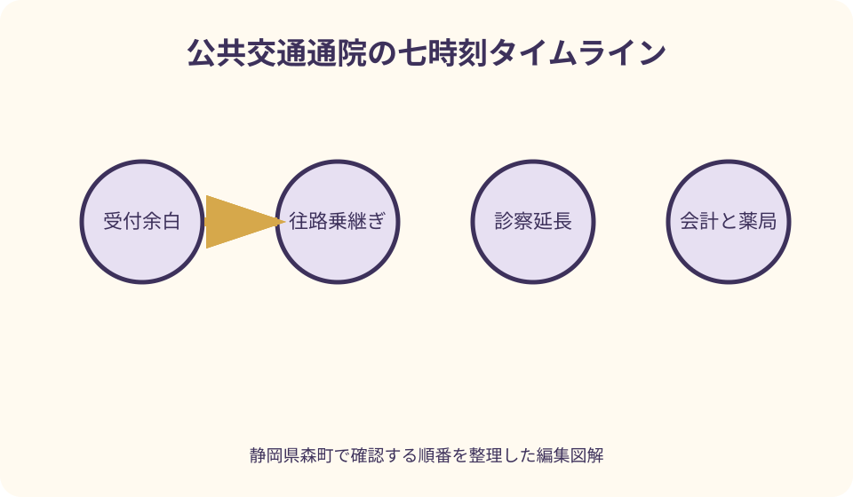
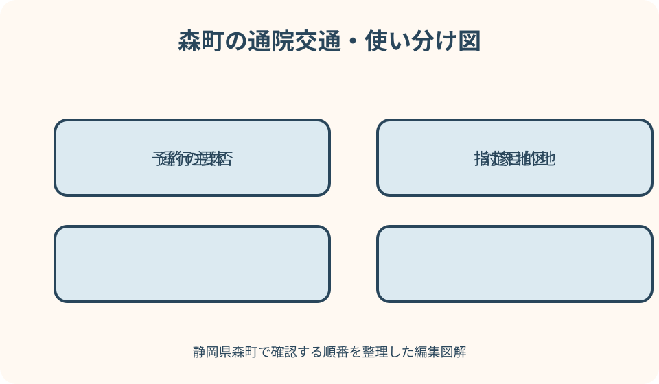

交通・外出・生活動線｜最終確認 2026-08-10
静岡県森町から公共交通で通院｜受付・薬局・帰り便まで組む
病院の予約時刻に間に合う便を一つ選んだだけでは、公共交通による通院計画は完成しません。受付や検査の余白、停留所から院内までの歩行、診察延長、会計、院外薬局、帰り便の待ち時間までを一続きにする必要があります。静岡県森町の町営バス、地域タクシー、鉄道・民間バスと、公立森町病院のアクセス・患者バス案内を分けて確認し、体調が悪化した日には予定を中止する判断も含めて組み立てます。

編集イラスト予約時刻を出発時刻へ直結させない
診療予約の時刻は、列車やバスの到着目標そのものではありません。受付機、保険資格確認、紹介状提出、問診、検査が先にある場合を病院へ確認し、必要な到着余白を足します。
初診、再診、紹介受診、発熱等の症状がある受診では入口や連絡方法が違うことがあります。家族の前回例を使わず、今回の診療科、予約券、病院公式案内で確認します。
病院へ早く着きすぎる便しかない場合は、建物が開いているか、座って待てるか、トイレを使えるかを尋ねます。屋外や停留所で長く待つ計画は体調負担になります。
予約変更や遅刻連絡は、ウェブフォームで受け付けない医療機関もあります。公立森町病院は予約に関する問い合わせ先を案内しているため、電話番号を紙にも控えます。
通院行程表を七つの時刻で作る
一枚の表に、自宅出発、停留所到着、乗車、病院到着、受付、帰り候補便、帰宅の七時刻を置きます。乗換えと薬局がある場合は、その間に行を追加します。
各時刻には『予定』と『実績』の二列を作ります。最初の受診で実際の歩行、待ち、診察、会計を測れば、次回の余白を本人に合う値へ直せます。
連絡先欄には、病院、運行者、タクシー、家族を分けて記載します。どこへ何を知らせるかも、遅刻、予約変更、運休、迎え依頼の四つに分けます。
診療内容や患者番号が入る表は個人情報です。家族全員の共有チャットへ無制限に置かず、同行者と緊急連絡担当だけが見られる保管方法を決めます。
森町営バスは予約便かを先に見る
森町営バスは大河内線と吉川線があり、事前予約が必要な便があります。病院名が時刻表にあっても、当日その時刻に予約なしで乗れるとは限りません。
時刻表では、運行日、停留所、予約印、予約期限、乗継ぎを確認します。診療予約日の曜日だけでなく、祝日や季節運行、臨時変更がないか町公式の更新情報へ戻ります。
帰り便も往路と同時に見ます。診察が早く終わる想定の一本だけでなく、その次と、その後に公共交通がなくなる境目を行程表へ記します。
予約便をキャンセルする可能性がある場合は、診察延長時に誰が運行者へ連絡するかを決めます。院内で本人が電話できない場合、同行者や家族が対応可能か確認します。
公立森町病院への鉄道・路線バスを確認する
公立森町病院の交通アクセスページは、天竜浜名湖鉄道の森町病院前駅、病院内のバス停、民間路線バスの案内を掲載しています。病院名が似た停留所を地図で照合します。
駅から病院まで近い案内であっても、ホーム移動、踏切、院内入口、雨天、杖や車いすでの所要は人により違います。初回は十分な余白を持ち、実際の歩行時間を測ります。
秋葉バスを利用する場合は、病院アクセスと事業者の当日時刻・運行情報を両方確認します。病院ページの経路案内だけで、最新便を確定しません。
天浜線から路線バスへ乗り継ぐ計画では、駅と停留所の位置、信号、待機場所を現地地図で確認します。検索上の短い乗換え時間が本人に可能かを別日に試す方法もあります。
患者バスは一般路線と役割を分ける
公立森町病院は、病院利用者向けの患者バスを案内しています。方面ごとに決まった曜日と運行表があるため、町営バスや病院内停留所へ来る路線バスと同じ便として扱いません。
患者バス公式ページでは、利用対象、乗り場、発車時刻、事前連絡の扱いを確認できます。過去の紙時刻表を使わず、受診日前にページと問い合わせ先を再確認します。
行きの患者バスに乗れても、帰りの運行が診察終了と合うとは限りません。帰路候補を患者バスだけにせず、町営バス、鉄道、一般タクシー、家族送迎でも用意します。
乗り場へ発車直前に着く計画を避けます。停留所の場所、道路横断、座って待てるか、雨天の待機を確認し、体調により利用が難しいときは乗車を中止します。

地域タクシーは住所と指定目的地を照合する
森町の地域タクシーは、一宮地区・園田地区の住民を対象とする案内があります。自宅と指定目的地の間を移動する仕組みであり、町内全域で誰でも使える一般タクシーとは異なります。
利用者登録、チケット、予約、運行日、指定目的地を事前に確認します。病院が指定先でも、受診後の任意の薬局へそのまま移動できるとは限りません。
診察が長引く可能性を伝え、予約変更やキャンセルの方法を聞きます。迎え時間を固定したまま診療を途中で切り上げる前提にせず、次の予約枠や一般タクシーを検討します。
対象地区外の人や、指定目的地外へ行く人は、通常のタクシー、町営バス、鉄道、家族送迎を組みます。制度名だけで利用可能と判断しないことが大切です。
診察延長を帰り便へ反映する
外来は予約制でも、検査や急患対応などで予定より長くなる場合があります。予約時刻から一定時間で必ず会計まで終わるとは考えず、帰り便を最低二つ記録します。
第一候補便に間に合うかを診察室で何度も気にすると、説明を聞き逃す原因になります。遅れが見えた段階で同行者が帰路を切り替える担当になると、本人は受診に集中できます。
最終の公共交通を逃す可能性がある日は、タクシー会社の連絡先、概算経路、家族が迎えられる最終時刻を先に確認します。配車や到着を保証するものではありません。
診察後に体調が悪いときは、予定便へ急いで歩かず、院内スタッフへ状況を伝えます。移動可能かの医学的判断を本人やこの記事だけで行いません。
会計と薬局を別の行程にする
診察終了は病院出発時刻ではありません。会計、処方箋の受取り、次回予約、検査説明が残る場合を見込み、会計終了の実績時刻を記録します。
院外薬局を使う場合は、病院からの距離、移動手段、受付終了、待ち時間、帰りの停留所を確認します。薬局に寄って元の病院停留所へ戻る必要があるかも地図で見ます。
処方箋の有効期間や薬の受取りをこの記事で個別判断しません。帰り便との都合で当日受け取れない可能性があれば、病院・薬局へ適切な方法を確認します。
地域タクシーの指定目的地に薬局が含まれる場合でも、病院から薬局、薬局から自宅という連続利用が可能かは制度案内で確かめます。一般タクシーと同じ使い方を想定しません。
付き添いの役割を受付前に決める
付き添い者は、単に同じ車両へ乗る人ではありません。交通確認、受付補助、医師の説明、会計、薬局、家族連絡のうち、本人が希望する役割を決めます。
本人の意思や診療情報を尊重し、家族だから説明へ必ず同席できるとは決めません。病院の面会・同伴ルール、本人の同意、感染対策を受診前に確認します。
同行者にも往復運賃と時間が必要です。本人分の交通費だけを準備せず、乗車券、タクシー定員、帰りの仕事予定まで含めます。
遠方の家族は、予約券、行程表、連絡先を必要な範囲で共有します。当日に電話へ出られない時間を示し、近くで対応できる第二連絡先を決めます。
体調悪化時は通常行程を中止する
自宅出発前に症状が急に悪化した場合は、予定していたバスへ乗ることを優先しません。医療機関へ連絡し、受診方法や緊急時の公的案内に従います。
発熱や感染症が疑われる症状では、病院が来院前連絡や専用の受診方法を設ける場合があります。一般待合へ直接行く前に、当該医療機関の最新案内を確認します。
移動中に具合が悪くなったら、次の乗換えを急がず、乗務員や駅員、周囲へ助けを求めます。家族へ位置を伝え、必要な場合は救急要請を含む公的対応を優先します。
帰宅途中の悪化に備え、病院、家族、緊急連絡先、服薬情報を紙でも持ちます。ただし情報を携帯したことは、安全な移動や受診受入れを保証しません。
雨天・運休時の通院判断
雨天は停留所までの歩行、乗降、傘や荷物の扱いを難しくします。晴天時の所要へ数分足すだけでなく、滑りやすい坂や冠水しやすい場所を避ける経路を考えます。
鉄道・バスの運休や道路規制がある日は、予約変更、タクシー、家族送迎を順に確認します。公共交通が止まる天候で、家族の車なら必ず安全とは限りません。
予約を変更できるかは診療内容や医療機関の判断によります。交通だけを理由に自己判断で治療を中断せず、受診先へ状況を説明して指示を確認します。
森町公式の公共交通情報と防災情報、各運行者の当日発表を見ます。前夜の時刻表画面だけで、翌朝の運行を確定しません。
タクシー・家族送迎の代案を具体化する
タクシーは会社名だけでなく、迎え場所、希望時間、車いすや大きな荷物、付き添い人数を伝えます。予約時点で配車可能でも、当日の道路状況で遅れる場合があります。
家族送迎は『困ったら迎え』ではなく、連絡期限、迎え場所、待てる上限、本人が電話できない場合の連絡役を決めます。病院入口を一つの名称で共有します。
往路は公共交通、帰りだけタクシーにする方法もあります。診察終了を読めない日は、時間指定予約が適するか、終了後の配車依頼がよいかを事業者へ確認します。
代案費用を現金と電子決済の両方で準備できるか確認します。支払手段は事業者ごとに異なり、スマートフォンの電池切れにも備えます。

受診後に次回の余白を修正する
帰宅後は、予定と実績の差を記録します。停留所まで、受付、検査、診察、会計、薬局、帰路待ちを分けると、次回に増やす余白が分かります。
一度だけ長く待ったから毎回同じとは限りません。二、三回の実績を見て、診療科、曜日、検査の有無による違いを確認します。
使わなかった代案も消しません。タクシー連絡先、家族の迎え条件、次便は、別の受診日や運休時に使えるため、確認日を付けて残します。
次回予約を取るときは、交通に合う候補時刻を病院へ相談します。希望どおりの枠や診療を保証するものではなく、医療上・運営上の判断を優先します。
良い点
森町内では、町営バス、天浜線、民間バス、地域タクシー、患者バスなど複数の入口を確認できます。住所と診療先が合えば、家族送迎だけに頼らない組合せを検討できます。
公立森町病院がアクセス、患者バス、予約変更などを公式に案内しているため、交通事業者の時刻と病院側の受付を別々に照合できます。
予定・実績の二列を残すと、本人の歩行速度や診療後の疲労に合う余白が分かります。一般的な乗換え時間より、次回の家族共有に役立ちます。
帰り便を複数持つことで、受診を急いで切り上げる圧力を減らせます。タクシーや家族送迎を最後の代案として明文化することも安心材料です。
注文したい点
利用者には、町営バス、患者バス、路線バスの名称が似て見えます。病院別に、運行主体、対象、予約、乗り場を一枚で比較できる町の案内があると誤乗車を減らせます。
診察延長後に使える帰り便を探すには複数サイトを開く必要があります。医療機関のアクセスページから当日運行情報へ直接移れる導線がさらに明確だと助かります。
地域タクシーは対象地区・指定目的地があるため、薬局を含む利用例と、連続移動ができない場合の説明が目立つと、通院者が予約前に判断しやすくなります。
患者バスの運行表は画像だけでなく、読み上げや印刷に適したテキストでも提供されると、家族が曜日・乗り場を確認しやすくなります。
代案・結論
往路の第一候補が使えないときは、一本早い便、別路線、タクシー、家族送迎、予約変更を検討します。緊急性がある場合は通常の順番にこだわりません。
帰り便を逃した場合は、次便まで院内等で安全に待てるかを確認し、難しければタクシーまたは家族へ切り替えます。無理に長距離を歩く案を標準にしません。
薬局まで回れない場合は、処方箋と受取りについて病院・薬局へ相談します。自己判断で受取りや服薬を変更せず、公的・当事者の案内へ戻ります。
結論は、受付余白を足した往路、診察延長を含む帰り二便、会計・薬局、体調悪化時の中止、タクシー・家族代案を一枚にすることです。
大石の視点
森町で暮らしを支える立場から見ると、病院までの距離より、帰り便を逃したときに帰宅できるかが住み続けやすさを左右します。町なかと山間部では代案の数も違います。
高齢の親の住まいを考える家族は、病院が近いという言葉だけで安心せず、玄関から停留所、受付、薬局、帰宅まで一度同行して測ります。
通院が難しくなったからと、すぐ転居や不動産処分へ結び付ける必要はありません。交通の組合せ、受診時刻、薬局、家族分担を試し、それでも困る部分を具体化します。
実用的な通院表は、本人を管理するためではなく、診察を落ち着いて受けるための道具です。時計を気にする役を行程表へ移し、本人の希望と医療を中心に置きます。
前日・当日・帰宅後の確認票
前日は予約券、受付方法、持参物、往路、帰り二便、運行更新、天気を確認します。予約便とタクシーの連絡先を紙にも書きます。
当日朝は体調を見て、悪化していれば医療機関へ連絡します。通常便へ乗ると決めた場合も、停留所へ余裕を持って向かいます。
病院では受付、診察、会計、薬局の進み方を確認し、帰り候補へ間に合わないと分かった時点で代案へ切り替えます。
帰宅後は各実績時刻、疲労、使った交通、連絡上の困りごとを記録します。受診や乗車を保証する計画ではないため、次回も公式情報を更新します。
公式情報・確認先
掲載内容は次の一次情報を基礎に整理しました。営業、料金、催し、交通は変わるため、出発前または手続き前にリンク先で最新情報を確認してください。
- 公共交通（静岡県森町、2026-08-10確認）
- 森町営バスのご案内（静岡県森町、2026-08-10確認）
- 一宮地区及び園田地区の地域タクシーのご案内（静岡県森町、2026-08-10確認）
- 防災情報（静岡県森町、2026-08-10確認）
- 交通アクセス（公立森町病院、2026-08-10確認）
- 患者バスの運行（公立森町病院、2026-08-10確認）
- 再診の方へ（公立森町病院、2026-08-10確認）
- 運賃と時刻表（天竜浜名湖鉄道、2026-08-10確認）
- 秋葉バスサービス公式サイト（秋葉バスサービス、2026-08-10確認）